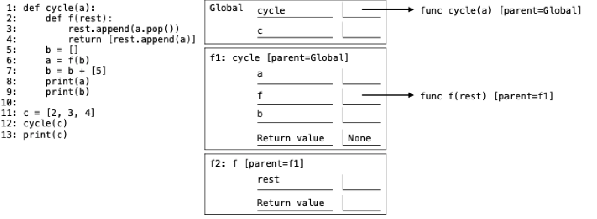

Complete the environment diagram below and then answer the questions that follow. Do not add frames for calls to built-in functions (such as print).
Environment Diagram:

(b) What would be printed by the expression print(b) on line 9?
(c) What would be printed by the expression print(c) on line 13?